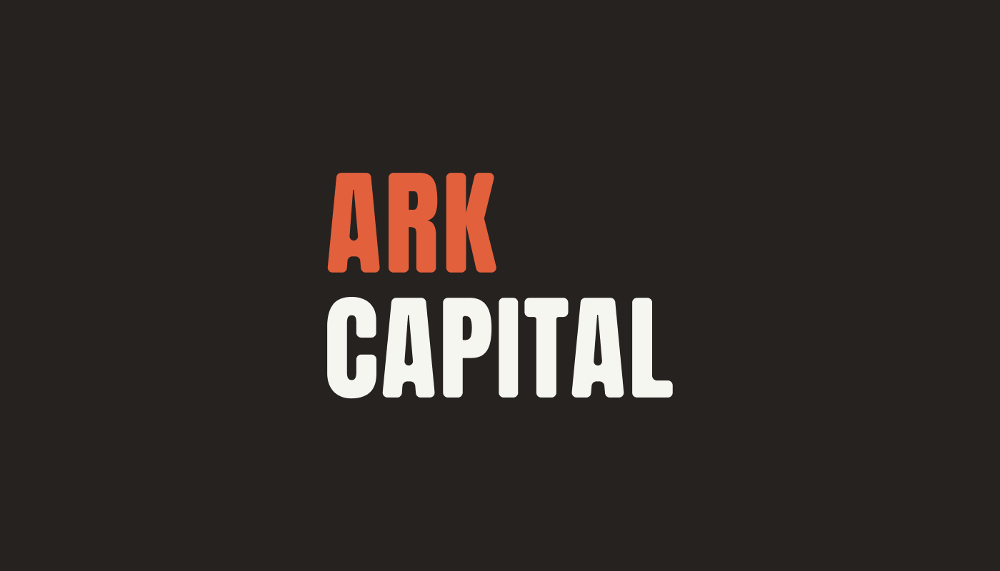

Selected project 16
Ark Capital.
A sister identity connecting people, capital and opportunity.
- Role
- Brand designer
- Period
- —
- Scope
- Identity and applications
- System
- Focused case study

(A) — Identity
From physical development toward people, capital and connection.
The scope
Brand identity and corporate applications.
The challenge
As a sister identity to Ark Development, Ark Capital needed to share a geometric logic while shifting the emphasis from physical development toward people, capital and connection.
My contribution
I adapted the system into a precise financial identity and extended it across corporate materials, vehicles, buildings and public communication.
01
Foundation → system → application
A shared geometry with a different purpose.
Identity system
The compact symbol, bold typography and high-contrast palette preserve a relationship with Ark Development while giving Ark Capital its own credible corporate voice.
(B) — Outcome
A financial identity connected to the wider Ark family.
- Preserved a clear relationship with Ark Development while establishing a distinct corporate voice.
- Translated the geometric system across public, physical and corporate applications.
- Created a focused foundation for future capital and investment communication.